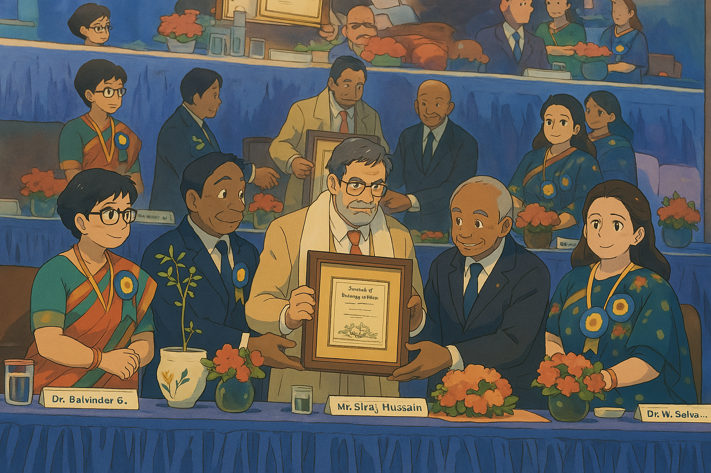

Welcome to AMIFOST 2025, organized by Amity Institute of Food Technology, Amity University, Noida.
This international conference focuses on innovations, sustainability, and health in food science and technology.
Event Highlights
Chief Guest: Mr. Siraj Hussain, IAS
Keynote Speaker: Dr. Manfred Buchele
Topics: Precision farming, sustainable packaging, non-thermal food processing
Panel Discussions: Food security, AI-driven food tech, alternative proteins
Networking Sessions: Meet industry experts, researchers, and academicians
Conference Sessions
The conference covered a range of critical topics including the role of AI in food technology, innovative processing methods, and the future of food security. Key sessions included:
- Advancements in Non-Thermal Food Processing
- Challenges and Opportunities in Sustainable Packaging
- Role of Precision Farming in Climate-Resilient Agriculture
- Global Perspectives on Food Security and Nutrition
Awards & Recognitions
The conference also honored distinguished personalities in the field of food science. The Chief Guest, Mr. Siraj Hussain, was felicitated for his outstanding contributions to the food processing sector.